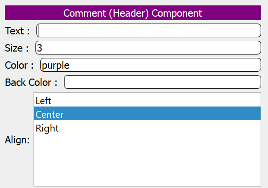

RingPWCT Visual Components
In this chapter, we present the visual components available in RingPWCT.
General/Comments
Index |
Component |
Description |
Image |
|---|---|---|---|
1 |
Header |
The component allows users to create and customize header comments within their projects. This component features fields for entering text, specifying text size (e.g., size 3), choosing text color (e.g., purple), and setting background color, ensuring flexibility in visual styling. Users can also select the text alignment from options such as Left, Center, and Right. This component streamlines the creation of visually distinct header comments, enhancing project documentation clarity and organization. |
 |